|
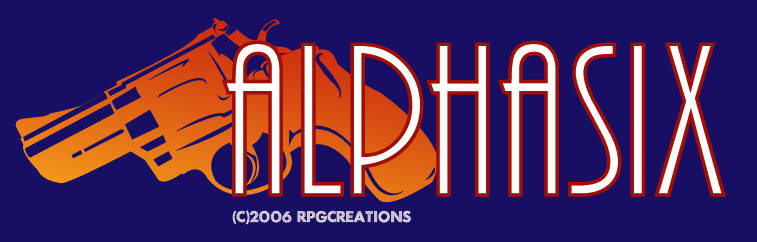
|
||||||||||||
|
INSTRUCTION
MANUAL (v1.3)
Thank
you for your interest in Alphasix, a one vs. one top-down shooter
created in the Game Maker engine by Radical Poesis Games
& Creations. Please
use this game manual to enhance your the game experience. It
is
intended as a technical guide for those who truly want to master the
game. The game can be picked up fairly easily without reading the
manual: you can learn the controls simply by looking at control
configuration menu within the game.
|
||||||||||||
| CONTENTS TECHNICAL NECESSITIES SYSTEM REQUIREMENTS . . . . . . . . . . . . . . . . . . . . . . . . . . . . . . . . . . . . . . . . . . . . . . . . . . . . . . . . . . . . . . . 1 INSTALLATION & TROUBLESHOOTING . . . . . . . . . . . . . . . . . . . . . . . . . . . . . . . . . . . . . . . . . . . . . . . . . . . . . . . . . . . . . . . 2 CHARACTERS BACKSTORY . . . . . . . . . . . . . . . . . . . . . . . . . . . . . . . . . . . . . . . . . . . . . . . . . . . . . . . . . . . . . . . 3 ALPHASIX . . . . . . . . . . . . . . . . . . . . . . . . . . . . . . . . . . . . . . . . . . . . . . . . . . . . . . . . . . . . . . . 4 PANZERJAGER . . . . . . . . . . . . . . . . . . . . . . . . . . . . . . . . . . . . . . . . . . . . . . . . . . . . . . . . . . . . . . . 5 PANZERFAUST . . . . . . . . . . . . . . . . . . . . . . . . . . . . . . . . . . . . . . . . . . . . . . . . . . . . . . . . . . . . . . . 6 SIXSHOOTER . . . . . . . . . . . . . . . . . . . . . . . . . . . . . . . . . . . . . . . . . . . . . . . . . . . . . . . . . . . . . . . 7 SPEEDSTAR . . . . . . . . . . . . . . . . . . . . . . . . . . . . . . . . . . . . . . . . . . . . . . . . . . . . . . . . . . . . . . . 8 CHARACTER COMPARISON . . . . . . . . . . . . . . . . . . . . . . . . . . . . . . . . . . . . . . . . . . . . . . . . . . . . . . . . . . . . . . . 9 GAME NAVIGATION MENU CONTROLS . . . . . . . . . . . . . . . . . . . . . . . . . . . . . . . . . . . . . . . . . . . . . . . . . . . . . . . . . . . . . .10 THE GRAPHICAL-USER INTERFACE . . . . . . . . . . . . . . . . . . . . . . . . . . . . . . . . . . . . . . . . . . . . . . . . . . . . . . . . . . . . . . 11 GAME ACTIONS MOVEMENT, DODGE, RUN, & DASH . . . . . . . . . . . . . . . . . . . . . . . . . . . . . . . . . . . . . . . . . . . . . . . . . . . . . . . . . . . . . 12 SIGHT, AIM, FIRE, & RELOAD . . . . . . . . . . . . . . . . . . . . . . . . . . . . . . . . . . . . . . . . . . . . . . . . . . . . . . . . . . . . . 13 MELEE FIGHTING & SPECIAL WEAPONS . . . . . . . . . . . . . . . . . . . . . . . . . . . . . . . . . . . . . . . . . . . . . . . . . . . . . . . . . . . . . 14 DEFENDING & SPECIAL CANCEL . . . . . . . . . . . . . . . . . . . . . . . . . . . . . . . . . . . . . . . . . . . . . . . . . . . . . . . . . . . . . 15 SUPER DEFENSE & OFFENSE, FULL AUTO . . . . . . . . . . . . . . . . . . . . . . . . . . . . . . . . . . . . . . . . . . . . . . . . . . . . . . . . . . . . . 16 DANMAKU & TAUNTING . . . . . . . . . . . . . . . . . . . . . . . . . . . . . . . . . . . . . . . . . . . . . . . . . . . . . . . . . . . . . 17 GAME CONCEPTS ADVANCED, TURBO, AND CLASSIC MODES . . . . . . . . . . . . . . . . . . . . . . . . . . . . . . . . . . . . . . . . . . . . . . . . . . . . . . . . . . . . . 18 DIZZINESS . . . . . . . . . . . . . . . . . . . . . . . . . . . . . . . . . . . . . . . . . . . . . . . . . . . . . . . . . . . . . 19 SPECIAL TERRAIN & OBJECTS . . . . . . . . . . . . . . . . . . . . . . . . . . . . . . . . . . . . . . . . . . . . . . . . . . . . . . . . . . . . . 20 TIPS & STRATEGY . . . . . . . . . . . . . . . . . . . . . . . . . . . . . . . . . . . . . . . . . . . . . . . . . . . . . . . . . . . . . 21 DIFFICULTY LEVELS . . . . . . . . . . . . . . . . . . . . . . . . . . . . . . . . . . . . . . . . . . . . . . . . . . . . . . . . . . . . . 22 2 PLAYER MODE . . . . . . . . . . . . . . . . . . . . . . . . . . . . . . . . . . . . . . . . . . . . . . . . . . . . . . . . . . . . . 23 TUTORIAL MODE . . . . . . . . . . . . . . . . . . . . . . . . . . . . . . . . . . . . . . . . . . . . . . . . . . . . . . . . . . . . . 24 ABOUT ALPHASIX PRE-POSTMORTEM . . . . . . . . . . . . . . . . . . . . . . . . . . . . . . . . . . . . . . . . . . . . . . . . . . . . . . . . . . . . . 25 CREDITS . . . . . . . . . . . . . . . . . . . . . . . . . . . . . . . . . . . . . . . . . . . . . . . . . . . . . . . . . . . . . 26 SUPPORT . . . . . . . . . . . . . . . . . . . . . . . . . . . . . . . . . . . . . . . . . . . . . . . . . . . . . . . . . . . . . 27 NOTES . . . . . . . . . . . . . . . . . . . . . . . . . . . . . . . . . . . . . . . . . . . . . . . . . . . . . . . . . . . . . 28 |
||||||||||||
| SYSTEM
REQUIREMENTS -- Windows 98E, 2000, Me, XP, or later, with DirectX 8.0 or later. -- A video graphics card with at least 16MB of RAM (64MB+ recommended). -- 256MB of RAM (512MB+ recommended). -- A CPU of least 1.0 GHz (2.0 GHz+ recommended). -- Optional: A joystick with two analog sticks (required for 2 player mode). |
||||||||||||
|
INSTALLATION
& TROUBLESHOOTING
INSTALL 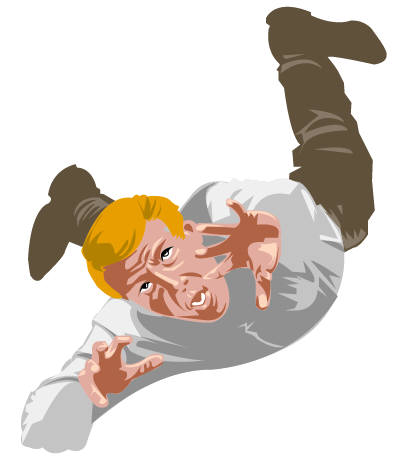To install, just unzip the zip in any folder, and make sure you have the zip program set to maintain directory structure. TROUBLE Here are some common complaints and how to resolve them: If movement seems to move by its own, erratically, or the danmaku attacks are triggered without the you even pressing anything, the problem is probably your joystick. Simply remove the joystick's connection to your computer and restart the game. If the game is too slow and you get a lot less than 30 frames per second, you probably don't meet the system requirements, particularly the video card or CPU speed. It's also possible that you need to upgrade your DirectX version, or your video card drivers. You can also try to run the game in 640x480 resolution mode (select that in the options menu) to see if that improves the game speed. If levels take very long to load, it's probably due to a lack of RAM; try closing other programs; Alphasix requires at least 100MB of free RAM. If you don't hear any music, or if the sound effects sound scratchy, try restarting the program, that should fix the problem most of the time. If you have any problems not addressed above, email me with a detailed report. |
||||||||||||
|
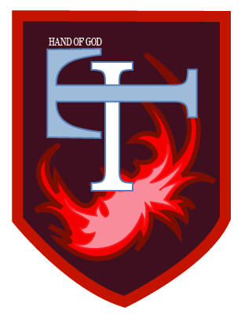BACKSTORY
THE BEGINNING
In 20XX, the world was at the height of a worldwide political upheaval. Terrorist groups and rogue nations had blossomed across the world. World War III seems inevitable. That is, until the new United Nations unleased "IT". "IT" was a band of secret highly trained fighters gathered from the various UN member countries, but abdicating their national loyalty and pledging allegiance only to the UN. Their missions and modus operandi were ethically questionable: civilian casualties were not a taboo as long as the work got done. Not long after its inception, terror lay not within the rogue nations, it resided under the control of UN. Few people really knew what had caused the change, as "IT" was kept secret even from the governments of the world that made up the UN. To everyone not in the know, it was simply a group to fight copyright piracy. It would occasionally do that too, just to maintain its image. It was known for the motto "Winners don't pirate!" THE MIDDLE After a series of alliances broke down, the UN fell into disarray and was eventually disbanded. With UN fading into history, "IT" followed soon after, and the world reverted to its former, pre-"IT", state of affairs. The UN secretary-general's final thought was to prevent the secret of "IT" from leaking. Employing the militaries of the new superpowers China and India, and the still-powerful United States, the general decided to take the most drastic measure: silence all the members of "IT" by releasing their names and identities to those superpowers. Many of the "IT" members managed to get away from this witchhunt, and lived peaceful lives in secrecy. But a small few of the survivors became embittered by the ordeal, seeing themselves as having been betrayed by the UN. These men and women banded together to form an independent mercenary group with a vowed vendetta against the superpowerful nations of the world. Soon enough, the existence of this mercenary group becomes a thorn for the world powers as the new "IT" began to aid resistance movements in third world nations. THE PRESENT After several key losses against "IT", notably Cambodia, which became newly liberated and free country, the world superpowers had no choice. They have decided to summon Panzerfaust, the retired soldier responsible for training the leader of "IT", Alphasix. However, those he has been sent to kill have rivalries of their own. No matter which character you choose, all the others must fall. |
||||||||||||
|
ALPHASIX
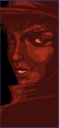Alphasix
was the leader of a UN-backed special forces unit called "IT". "IT"
enjoyed several years of successful anti-terrorist campaigns before
being disbanded with the downfall of UN. Under Alphasix's leadership,
"IT" was reincarnated as an independent mercenary group working for, or
some say controlling, rogue nations.
Alphasix prefers weapons from the Israeli gun manufacturer IMI, especially the Desert Eagle with .50 Action Express caliber ammunition. This particular version of the Desert Eagle has been hailed as the most powerful pistol in the world, and indeed it is as far as power goes: the .50 Action Express ammunition can go tear through any kevlar suit effortlessly. However, its power is also its biggest drawback: The recoil is horrendous, and the relatively small ammo clip also means that its user has to make every shot count. 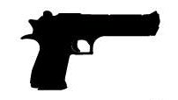As her melee weapon, Alphasix has a katana ready when the time calls. The katana has the longest reach out of all melee weapons available and does the most damage. It can even destroy large crates, which no other melee weapon can do. Alphasix's trademark speciality is setting traps. She's notorious for her abilities to hide mines, especially in a jungle setting. The Claymore mines, Alphasix's preferred material of destruction, can cause massive damage to its victims. These landmines, however, is not a weapon for the reckless and forgetful, as the person who placed it has as much chance of accidentally triggering the mine. Besides the chance of triggering her own mines (which do twice as much damage against her as against her opponents, due to her sheer frustration when it happens), she has no real weaknesses. She's slightly slower than average due to the weight of all the mines she carries around, but as she places these mines her speed becomes faster and faster, until it outclasses even Speedstar's. Her dodging distance is without parallel, at times her opponents swear she can move through walls. Little is known about her personal life, only that she always wants to be the best at everything and drinks her coffee black. She also has occasionally been seen reading the old law books of nations which no longer exist, and wears a special "IT" Hand of God cross at all times. If you complete the game on difficulty level 4 or higher, Alphasix will become a playable character. |
||||||||||||
|
PANZERFAUST
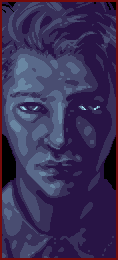Panzerfaust
Worked with SAS for a brief time before he moved to the US for
retirement. He was asked to train the "IT" squad on his later years,
and had a mentor-student relationship with Alphasix. He was brought out
of retirement by the US goverment with one last task: Eliminate
Alphasix and all key members of "IT". He initially refused the plea of
the US government, citing his former friendship with A6, but eventually
he was forced to agree. He had been tormented with the fact that he was
partially responsible for all the killing "IT" had caused, both before
and after the fall of the UN.
Panzerfaust uses the Heckler & Kock USP pistol, one of the standard sidearm issued for US military personnel. It packs more punch than the 9mm caliber beretta and has an overall decent firing rate. 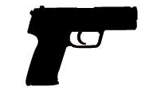The SOG is standard issue knife for US military personnel. It's easy to conceal and very light. It does medium damage, but has a rather short range. When the situation calls for desperate measures, Panzerfaust has several flashbang stun grenades ready. The flashbang, if used properly, will blind and stun the victim. This is not a weapon to be taken lightly however, as the flashbang can also blind the owner if used recklessly. Panzerfaust, like Alphasix, has few weaknesses. Due to his psychological knowledge, he is the best of all the characters at confusing his opponent, whether it be with a flashbang or with normal gunfire. However, he has no strong offensive techniques, and most often relies on slowly and steadily winning the battle, retreating when necessary, rather than doing the most damage in the shortest amount of time. He married a civilian who has no idea about his former history, and in his spare time he enjoys tennis and playing with his children. |
||||||||||||
|
PANZERJAGER
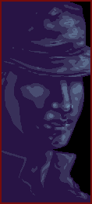He
joined "IT" just before the UN dissolved, and so isn't really that
close with the other members, and works for them only because he can't
go back home, not because he shares their ideal of a stateless world.
He earned his nickname as a mercenary group for his aggressive modus
operandi, and in reference to Panzerfaust's. He resented this as this
implied to him that his skill is being seen as second to Panzerfaust.
When he learned that Panzerfaust is coming out of retirement, he vowed
to finally prove his superiority and to claim the title "panzer" all
for himself, and no one will stand in his way, not even Alphasix, who
gave the order to leave Panzerfaust to her.
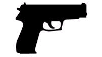 Panzerjager's primary weapon of choice is the Sig Sauer P226. The ammunition clip allows one more bullet (13) when compared to the USP. The overall quality of the gun is similar to the USP except that it's slightly more powerful and has a slightly slower rate of fire. Like Panzerfaust, he uses the SOG as a melee weapon. It does medium damage, but has a rather short range. More focused on aggressive tactics than Panzerfaust, Panzerjager prefers the explosive power of grenades over flashbangs. It does great damage and is relatively useful to weed out campers hiding around corners. Like the flashbang and the mine, the grenade too can harm its owner. Panzerfaust's grenades are the strongest offensive attack in the game besides the danmaku attacks, but those have the risk of being bounced back at him by clever opponents. In gunfights he isn't as skilled or as capable as many of the others, and so prefers to rely on grenades. He likes playing videogames, though he doesn't like violent ones, probably because they remind him of his battlefield experience. |
||||||||||||
|
SIXSHOOTER
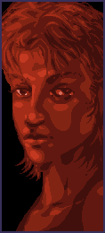Alphasix's
most trusted agent, Sixshooter is second in command of "IT".
Together with Alphasix, Sixshooter has gone through many campaigns
across the globe. Her experience in battle, coupled with her high
proficiency in marksmanship, makes her one of the most feared
mercenaries. She's fond of Alphasix, but believes that Alphasix's
vendetta against every single government in the world has blinded her
rational judgement of the political strategy that the group should
pursue. After a particularly bad decision (to support a coup in her
native Europe), Sixshooter is out to stop Alphasix from herding the new
"IT" to its demise, whatever the cost may be.
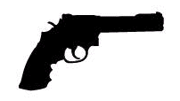Sixshooter is fond of revolvers has quite a collection that she gathered throughout her campaigns. Of all the revolvers she had tried however, she preferred the Smith & Wesson .357 magnum revolver. Though relatively slow and having a small ammo capacity, the revolver is the second most powerful gun in the game, has the fastest bullet speed, and if used right has an almost zero reload delay. Accustomed to fighting guerilla wars in the jungle, Sixshooter took to carrying a bowie knife to plow her way through thick vegetation. The knife has a medium reach and does more damage the SOG knife, though it is somewhat slow. Sixshooter choice of special equipment is a special ops kit. It's a kit designed for enchance the user's vision and listening ability. Though it can't tell you the exact location of a very distant enemy, it will let you know whenever they're nearby with a radar sound and white flash. It also enhances the accuracy of her aim. The only downside to this high-tech gadget is that it eats up the battery fairly quickly. The gadget is automatically used as the round starts, and cannot be turned on or off, and unless replenished with special boxes will eventually run out of power. Sixshooter's strength is in gunfighting: in a frontal assault, without cover to hide behind, she will probably be the victor against anyone, even Alphasix. This is especially true from a distance, as Sixshooter's bullets travel extremely fast, and her aiming accuracy is the highest of everyone. And because of her special ops kit, her opponents can't stay hidden for long. Her weakness lies in her slow speed, caused by an earlier leg injury; because of this, she won't have much time to move out of the way of attacks, or to chase fleeing opponents down. Sixshooter enjoys cooking and her alter-identity during the UN days was as a famous chef with a cooking show called "Delicious Food and More". She still has fans of that show who recognize her occasionally. |
||||||||||||
|
SPEEDSTAR
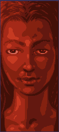Just
as her code name suggests, Speedstar is quick and agile. Although a
newcomer to the world of the mercenaries, and not an original member of
"IT" under the UN, Speedstar managed to climb through the organization
ladder with great skill. Though she is a very capable
mercenary,
Alphasix is often reluctant to put her in charge. Speedstar is far too
ambitious and rising far too fast, and Alphasix fears that Speedstar
will one day plan to oust her from "IT" before Alphasix has
accomplished all of the group's goals.
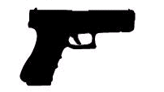As far as damage goes, the Glock18C is by far the weakest gun in the game. But the extremely high rate of fire -- almost as fast as the player can click -- and the generous ammo clip make up for that drawback. It's particularly effective at firing a barrage of random bullets in a general direction. Melee combat conflicts with Speedstar's "run & gun" combat style, but she understands that melee is often inevitable. She prepares a switchblade whenever the situation calls for a close quarter battle. The switchblade is fast but is terribly weak and has the shortest range. But, like Alphasix's katana, it can hit an opponent multiple times if used right. Other than speed, stealth is Speedstar's trademark. The camo kit that she carries will make her temporarily invisible. The invisibility will however be disabled whenever Speedstar starts shooting, or performs any other action (apart from movement). It should be noted too that the camo kit is not a magical stealth cloak: its user will be visible whenever they get too close to the enemy, and she will still leave footprints if she walks in the snow or comes out of a swamp. If the first shot going out of camo mode is successful, it will dizzy the opponent. Conversely, if Speedstar user is shot while in camo mode, the user will be dizzied. Her weakness is simply a lack of fire power: it takes a lot of firing before she can bring someone down. She often plays defensively, and is particularly good at avoiding danmaku attacks, due to her speed and her special cancel, which reaches double the distance of the other characters (but also costs twice as much tension to use). Speedstar has no personal life, her home and family having been destroyed when the UN destroyed her village to test a secret weapon. Alphasix still has not told her that "IT" was part of the UN at the time that happened, and that she was involved in that test, but Speedstar has recently discovered this. |
||||||||||||
|
CHARACTER COMPARISON
The
following is a table comparing the characteristics and attributes of
all the characters. If you don't understand it right now, no worries.
Read the rest of the manual or play the game a bit and come back, and
it'll make more sense. This list is only provided for reference to
those who really want to know their enemies, and their own
abilities.
*Alphasix's speed varies based on how many mines she is carrying. What is shown is her max speed when she isn't carrying any mines. When she is carrying a full set of mines, she is slower than any other character. **Speedstar throws her switchblade for a short distance, so its effective range is greater than it appears. ***Marksmanship refers to how many degrees a character tends to miss a target by, at the maximum. |
||||||||||||
| 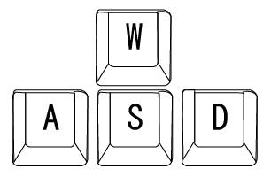MENU CONTROLS Use the
arrow
keys, the W/A/S/D keys, or the joystick to navigate through the menus.
On the character selection screen, left and right chooses a character,
up an down chooses a play mode
In the options screen and in the controller configuration screen, any button except Enter will choose what the cursor is on, and Enter will confirm all of your choices and return you to the previous screen. In the controller configuration screen, to change what function a key is associated with, simply move the cursor with the keyboard or joystick to that feature, hold the left mouse button, and then (while holding the mouse button down) press the key you desire to be associated with that function. To return to the title screen at any point in the game, press the Escape key. To quit the game, press the Escape key on the title screen. Your option selections and controls selections will automatically be saved to file. |
||||||||||||
| THE
GRAPHICAL-USER INTERFACE The graphical user-interface provides information on the game state. There are three bars at the top of the screen which combine to indicate the player's physical, mental, and emotional health. Which life bar is yours is indicated by your character's name (and their A/B/C mode) under their life bar. There is a timer between the life bars of you and your opponent. You also have a heads-up display near a bottom corner of the screen. Your enemy's tension meter is not normally visible to you, but if you play as Sixshooter, and have power left in her special ops equipment, you can see your enemy's heads-up display and tension meter. 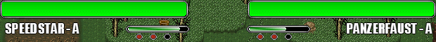
THE LIFE BAR The life bar represents physical health: when it reaches 0, you die, when your opponent's life bar reaches 0, they die. You may choose 1, 2, or 3 lifebars from the options screen, which will affect how quickly battles are won or lost: these life bars are colored differently and overlap (green for third bar, blue for second, orange for last). THE TIMER When
the timer (if there is one, this can be changed in the options) reaches
0, the life bars of both players begin to drain steadily, this is
called "overtime". During overtime, if your life bar is higher than the
enemy's, run and hide! If it's not higher, try to reduce the enemy's
life bar as quickly as possible until it is lower than yours, and then
run.
THE TENSION BAR The tension represents motivation, stored energy, and preparedness: it allows you to perform most special functions. It's a bar combined with three buttons, each button representing a full bar; its maximum is three bars (and will flash if it reaches that point). In A-Mode and C-Mode, your tension begins at 1/3 (one bar), and in B-Mode, it begins at 0. The tension bar increases slowly with time in A-Mode and C-Mode, and in B-Mode it increases while defending, when you successfully dodge an attack, or when the life bar goes down. THE DIZZY BAR The dizzy bar represents mental clarity and focus, and is a thin green line right under the life bar which is invisible when full. Whenever you're hit by a bullet or a melee attack, it is reduced slightly; it's reduced much more if you're hit while defending. When it's all gone, you become dizzy for several seconds, and cannot do anything but stand there and get hit. The dizzy bar recovers with time after being lowered, which makes it a good idea to get away if it's very near 0, until it recovers to an acceptable level. A later section explains dizziness in more detail. WEAPON TOGGLE To change
your weapon, the defaults are the numerals 1,
2, or 3 on the keyboard, or button 9 on the joystick. This simply
switches your currently selected weapon, and that weapon can now be
activated by the fire button. Your special weapon is selected with 1, your melee weapon with 2, and your gun with 3.
HEADS-UP DISPLAY In the bottom corner of the screen is the heads-up display: this displays which weapon a character has equipped, and how many remaining uses it has. If your gun is empty and requires reloading, an R will appear over it. A little bar will appear under Speedstar's camo unit; this indicates how much energy remains for that special item. When the bar is empty, the item is unusable. The number appearing after the gun is not how many bullets remain in the gun but how many clips remain to reload the gun. Collecting the boxes labeled "A" gives a character another pistol clip. The number appearing after the land mine, grenade, or flashbang stun grenade, represents how many of those items the character possesses. Collecting the boxes labeled "S" replenishes this number, as well as the energy of the camo unit or special ops unit. |
||||||||||||
| MOVEMENT, DASH, DODGE, & RUN MOVEMENT Movement is quite simple. Its defaults are W, S, A, and D, or the first analog stick on the joystick. Each character moves at a different rate of speed, and they move one-third faster in C_Mode than in A_Mode and B_Mode. If your character touches an enemy, both of you will "bounce" back, pushing each other away. This does no damage and you cannot do anything during this recoil. The distance you recoil is related to that character's "weight", which is equivalent to the inverse of their speed. Whichever character's weight is greater recieves only half as much recoil as the other character. You can use this recoil bounce to your advantage. 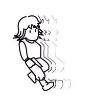DASHING Dashing (defaults: ctrl, joystick button 5) is for A-Mode only. When it's performed, the character dashes forward in the direction in which they were last moving. It also be triggered by very quickly double-tapping the move button in the desired direction on the keyboard only. While dashing, you cannot be harmed, and you move extremely fast, but you cannot shoot or do anything else. Dashing continues until a solid object is hit, or it can be canceled by pressing the opposite movement direction in which you are dashing. Dashing is very powerful and useful, but requires a lot of tension to use, so don't over-use it. It requires 1/8 of a tension bar to begin, and the longer the distance that is dashed, the more additional tension it requires. Dashing is much faster than running, but it can only be done in one of the four orthogonal directions, making it less flexible. Dashing is more useful for quick entries and escapes, especially escapes from danmaku attacks, while running is more useful for actual gunfighting. 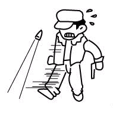DODGING Dodging (defaults: ctrl, joystick button 5) is for B-Mode only. It requires precise timing: simply press the dodge button right before you're about to be hit with a bullet or a melee weapon; you will vanish briefly and, if timed right, recieve no damage, and even recieve a bonus to your tension bar. If you were holding down a movement button, you will tend to dodge in that direction. You can think of dodge as a short-distance teleportation, or as a jump. Dodging costs only a small amount of tension to use, and if you don't have any tension at all it's still usable. Dodging distance varies by character, with Alphasix having the longest range. It can be very annoying to face an expert dodger, but remember that dodging does not work on explosive damage (such as barrel or car explosions, flashbangs, and grenades) and that there is nothing to stop a dodge from landing directly on a mine. 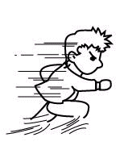RUNNING Running (defaults: ctrl, joystick button 5) is for C-Mode only. Running, contrary to movement, does accelerate with time and distance. Hold the button down in combination with the movement buttons. Speed will gradually increase as long as you don't change directions, at which point you have to begin accelerating all over again. But even at the beginning stages of acceleration, running is faster than simply walking. Running doesn't require any tension, but your tension will not increase through time when you are running. STRAFING Strafing (defaults: keyboard arrow keys, joystick POV gamepad, middle mouse button) is not usually that useful, but it can be useful for evasion. Pressing forward moves toward your aiming cursor, pressing left and right strafe to the left and right relative to the cursor position, and pressing backwards moves you away from what you're aiming at. Another trick is to hold the "strafe forward" button on the joystick, and then you can simultaneously move and aim using the joystick. This works with the keyboard and mouse as well, holding the middle mouse button while moving the mouse around will make your character follow your mouse cursor. This is sometimes useful for avoiding danmaku. |
||||||||||||
|
SIGHT, AIM, FIRE, & RELOAD
SIGHT This game employs a line of sight system -- when the enemy is around a corner, behind a wall or other object, behind you, or when you are dizzy, he'll be invisible to you. And the same is true in reverse. If you've played the Metal Gear Solid games,you have some understanding of how fields of vision work; it's roughly the same except that the distance is unlimited, it's an infinite cone. Your field of sight is indicated by a colored triangle. It's easy to lose track of the enemy, so become accustomed to deducing where they are. AIMING Your character's cone of sight will be centered on the direction in which they are aiming. Aiming might be tricky, and the mouse and the joystick handle it differently. Aiming with the mouse is simple: move the mouse where you want to fire at, and when you use the fire button your bullet (or trap, or melee attack) will be in that direction. When the target cursor is directly over an enemy (even when that enemy is invisible) it will increase in size. This can be used to your advantage to find where the enemy is by sweeping areas you expect him to be with the target cursor. Using the joystick to aim is a bit more complex: you point it in the direction you want to aim, and until you press another direction, you will continue to be aiming in that direction, even if you walk in a different direction. FIRING Firing (defaults: left mouse click, 'E', or joystick button 3) is not automatic: holding it down does not continuously fire. You can of course cheat with a "turbo" controller, but, that's cheating. Every character has a cooldown time, during which they cannot fire; Speedstar can fire the most rapidly, Alphasix the least rapidly, and the others are somewhere in-between. Bullet damage differs by character, with Alphasix doing the most damage, Speedstar the least, and the others somewhere in-between. Bullets also differ by speed; Sixshooter has the fastest bullets, Panzerjager has the slowest, and the others somewhere in-between. Consult the character comparison table for more details. When you aim, aim for the bottom half of a character, because of the perspective used, aiming at their head isn't actually aiming at a character, but behind a character, and it will seem to pass through; so aim at the heart. The number of bullets on screen at once is unlimited, but each bullet will disappear after a certain amount of time, or when it hits something (except when it hits a bouncable object, of course). Bullets can bounce, and Sixshooter's bullets become stronger and faster when they do, although the other characters' bullets become weaker and slower after bouncing. Bouncing is a key to good gunplay strategy, especially with Sixshooter. Most levels have at least one bouncable object in them. As an option in the options menu, you can use the joystick aiming analog stick to fire; you simply push it to the extreme in any direction and it will fire in that direction. If you've played Smash TV, it works a bit like that, although you cannot hold the direction to continually fire, you'll need to push the analog stick in that direction and then return it to its resting position in order to fire multiple shots using this method. 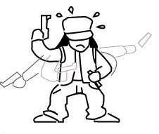RELOADING Each character has a clipsize, which holds a different number of bullets. When it reaches 0, a new clip is needed. There are two basic ways to reload. Both use the (default) key of R, or joystick button 4. Manual reloading is slower, but requires no tension to perform; you simply hold reload button. The clip will turn red for two or three seconds, and then the reload will be complete. The character may move during this time, but may not use other weapons. Because Speedstar has a large clip size (20 bullets) she takes longer to manually reload than the other characters do. Quick reloading takes 1/4 of a tension bar, and is performed by pressing the reload button twice rapidly. It instantly reloads. This is preferable while in the midst of fighting, and is tempting to use every time, but the expert player will more often use manual reloading, to preserve tension for more important things, like danmaku and full auto mode. Sixshooter cannot reload using either of those two methods, because she uses a revolver. With her, pressing the reload button reloads a single bullet. She can reload even when she is only missing one bullet out of her maximum of six. So to reload her entire gun when it's empty, simply press the reload button six times in succession; the faster you press it, the faster she reloads. In effect, the fast-fingered will find her reloading to be the most convenient, because it doesn't take any tension and is almost as quick as quick-reloading for the other characters. |
||||||||||||
|
MELEE FIGHTING & SPECIAL WEAPONS
MELEE Melee attacks might seem a useless last resort at first, as they do little damage and have a small reach, but they have several advantages. They don't require bullets, they do a large amount of damage on a dizzied opponent (more than any bullet), and they can actually reflect bullets if timed correctly. They can even prevent the melee attack of another character from doing damage: if two melee weapons come into contact, neither player recieves damage, and both are pushed back. Alphasix's melee attacks are quite powerful, it's possible to win the game (on on high difficulty levels) entirely using her katana. GRENADES Panzerjager's grenade does the most damage of any attack in the game besides danmaku attacks, but is easy to avoid or cancel. Panzerjager, and Sixshooter if special ops is on, will see a countdown from 5 to 0 (it explodes at 0). The other characters will see no countdown, and won't know exactly when it will go off. Using several grenades at once is a useful strategy. The grenade, when launched, bounces between objects, increasing in speed with each bounce. The initial speed of it depends on how far the mouse is from the player when you trigger it, or on how far the analog stick is pressed (when using it with the joystick). If it picks up enough speed, it can be very hard to cancel or avoid, but this is dangerous for Panzerjager as well, because it can also harm him. FLASHBANG Panzerfaust's flashbang, like Panzerfaust's grenade, is launched and bounces between objects, although it has a shorter fuse (three seconds instead of five). When it goes off, anyone within a medium-range distance will be blinded (the screen will become pure white), and anyone very near to it will become dizzy, or at least have their dizzy meter reduced. The flashbang will also reduce the tension of Panzerfaust's opponent if they are near enough to it, and the nearer they are to it when it goes off, the more their tension is reduced by. Unfortunately, because Panzerfaust can't see the enemy's tension meter, he won't know exactly how much his flashbang reduced his opponent's tension by. The flashbang deals no damage, so it's only really useful as an adjunct or preparation to Panzerfaust's gun. It's especially useful when combined with full auto and a lot of bullets. It can also be used as a method of escape, where one can prepare (build up tension in B-Mode, or rearm with more ammo boxes). LAND MINE Alphasix's land mine is placed in the ground and remains in that spot until triggered. IMPORTANT: move before the mine is fully placed, otherwise it will go off on Alphasix as well. Mines do a good deal of damage (and double damage on Alphasix herself!), but not as much as Panzerfaust's grenade. Mines cannot be placed when Alphasix is in view of her opponent, only when she is out of view (such as around a corner, or behind a crate). This makes mines good for large and maze-like levels, and less useful for small and open ones. Mines are deadly for the careless player, because they can't be seen until a character is a few steps away from them, so they require quick reaction time to avoid triggering them. They're more dangerous to characters who walk quickly, because they are less likely to see the mine before triggering it. Like all specials (except for Sixshooter's), they can be canceled with the special cancel ability, and if they are blocking your path that's usually the best thing to do. If you are playing against Alphasix, pay attention to the floor as you walk, and if a mine appears in your path, go carefully around it or special cancel it. When you are Alphasix, place them in key positions that a person would be likely to step on. Mines are completely invisible when placed in swamp. CAMO Speedstar's camo kit allows her to disappear for a short time; the opponent will not be able to see her. However, if she performs any visible action, such as shooting, the camo unit will be turned off and she will be visible again. Like the mines, camo cannot be initiated when in view; Speedstar can only become invisible when out of the opponent's field of vision, such as around a corner or behind a crate. Note that in some stages, you are pretty much *always* in the enemy's view, so camo won't really work in those stages (although it can be used when your opponent is dizzy or when you are standing behind him or her. She can be hit while invisible, and if this is done she becomes visible and dizzy. If she shoots while invisible, the first shot which makes her visible will dizzy her opponent if it hits (because they were not expecting it). Camo is thus most useful as a fast way to dizzy the opponent, and is also sometimes useful as an escape device (to recover your dizzy meter or to find more bullets). In snowy areas, and if she has stepped in the swamp in swamp areas, her footprints will still be visible, so her position can be inferred in those stages, making her less useful in those areas. Due to the nature of play (both players using one screen), both players in 2-player mode will be able to see the other player even if that player is in camo mode, although the dizzy shot and dizzying effects will still apply. SPECIAL OPS Sixshooter's special ops unit has no offensive use, it's purely tactical. While powered, it confers the following. First, a radar beep which will beep faster and louder the nearer you are to your enemy, and (if you have stereo speakers) the left-right sound of the beep will indicate the position of your opponent. Additionally, a small flash will indicate the location of your opponent if he or she is out of your field of vision. The special ops unit also acts as a counter to the special abilities of the other characters. It increases the speed at which Speedstar's camo energy drains when she is in camo mode to twice that of normal; it reduces the glare from the flashbang if Sixshooter happens to get hit by it (so it can't blind her completely); it allows Sixshooter to detect where mines have been placed (they'll always be visible, except in the swamp); and it allows her to see the countdown numbers on the grenade and flashbang (so she'll know when they're about to go off). It also allows Sixshooter to see the heads up display and the tension meter of her enemy, so that she knows which weapon the enemy is preparing to use, when they run out of bullets or special abilities, and when would be a good time to taunt. Due to the nature of play, in 2-player mode Sixshooter will recieve no benefit from the special ops kit, except for mine visibility (for *both* players) and reduction of Speedstar's camo energy. |
||||||||||||
|
DEFENDING & SPECIAL CANCEL
DEFENDING Defending (defaults: shift, joystick button 6) is easily underestimated, but is as essential in this game as in many 2D side-view fighting games. Defending creates a protective forcefield, which reduces damage by about 80%. It only works against melee, bullet, and danmaku attacks however; you can't defend against grenades and other explosions. While defending, the dizzy bar goes down faster as it otherwise would, so use dizzy sparingly, especially against Panzerfaust, and keep an eye on your dizzy meter when you use it. Because danmaku bullets don't dizzy, defending is highly recommended when your opponent is using a danmaku attack. You can move while defending, although movement is slower, but you cannot shoot or perform most other actions. While in B-Mode, defending increases your tension meter. A character in A-Mode may not defend. SPECIAL CANCEL Special cancel (defaults: T, joystick button 2, right mouse button) is a purely defensive function; it creates a circle of cancellation around the player, which destroys any bullet or special ability in that range, including danmaku bullets. Even can even cancel camo. Its range is only a small distance (although Speedstar has a slightly longer range, at the cost of a higher tension requirement). It costs a third of a tension bar to use, or closer to half a bar for Speedstar. Special cancel is very useful as protection from grenades and flashbangs (if you can't simply run away from them), or as a quick way to get rid of an approaching bullet. And it's an essential tool when your opponent is using a danmaku attack and a large amount of bullets are about to hit you. Special cancel is the only action that can be performed when you are dizzy, and it brings you out of dizzness -- when it's used this way it's sometimes called dizzy cancel. |
||||||||||||
|
SUPER DEFENSE & OFFENSE, FULL AUTO
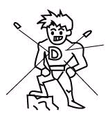SUPER DEFENSE Super Defense (defaults: Z, joystick button 7) roughly doubles your defense while in use; it lasts about ten seconds after using it, and costs one tension bar. While in use, the screen has a blue filter effect. This is good to use in overtime mode, when you are ahead in life energy. It increases defense against everything that regular defending increases defense against, but doesn't increase defense against attacks which are not affected by normal defending (such as explosions). 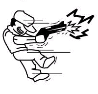SUPER OFFENSE Super Offense (defaults: X, joystick button 8) roughly doubles offensive attacks (bullets and melee attacks only, but not danmaku bullets) while in use; it lasts about ten seconds after triggering it, and costs one tension bar. While in use, the screen has a red filter effect. This is very good to use just prior to using Full Auto, if you have enough tension for both. 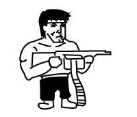FULL AUTO MODE Full Auto Mode (defaults: C, joystick button 10) costs two tension bars, but only one tension bar in B-Mode. It allows you to shoot continuously (as long as your gun is loaded). Speedstar, due to her already fast rate of fire, cannot use this feature. This feature is excellent to use when the enemy is dizzy! But it does waste a lot of bullets, and is less accurate than single-shot firing. It's usually weaker than a danmaku attack, so should usually only be used when those are not available. |
||||||||||||
|
DANMAKU & TAUNTING
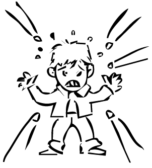DANMAKU Danmaku ("curtain fire") attacks are the flashiest attacks in the game, but they are important to the gameplay as well. Each character has three levels of danmaku, requiring one, two, or three tension bars, respectively. To trigger them, simply hold the gun button: if you have enough tension for a danmaku attack, your power will begin to overflow visibly from your body. When it reaches full power (white), release the button, and the attack will begin. Bullets will begin to fly out, and you will be unable to move for a short period (but you will also be invulnerable during that period). You will not be able to control the pattern of the bullets, it will depend entirely on which character you are, which mode you are in (A, B, or C), and which level of attack you triggered (it automatically uses the highest level of danmaku attack available to you: if you have two and a half tension bars, your level two danmaku attack will be triggered). You may only use a particular danmaku attack once per battle, so you can use no more than three danmaku per battle (one of each level). There are a total of 45 different danmaku attacks in the game (3 tension levels x 3 modes x 5 characters = 45). A counter recording the number of bullets that hit your opponent will be displayed under your character's name -- as more bullets hit a character, they each do progressively less damage: it's possible to take over 100 hits and still survive (although this depends on how many life bars the person getting hit had). 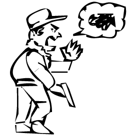Typically higher-level danmaku attacks are more powerful than lover-level ones, but this isn't universal, it depends on how many of the bullets hit your opponent. Generally, it's good to be close to your opponent when you use a danmaku attack. Danmaku attacks tend to be more useful in close quarters, and less useful in stages with wide open spaces. TAUNTING Because danmaku are the primary reason to save up a lot of tension, taunting (default: V -- not yet accessable from the joystick) is an important counter to danmaku. You can taunt only once per battle, but when you do, your opponent's tension meter goes down drastically, usually to very near zero. A good time to use taunt is when you see your opponent charging up a danmaku, especially if you suspect it's a level 3 danmaku. |
||||||||||||
|
ADVANCED, TURBO, & CLASSIC MODE
There are three modes in which you may play the game. Because there are five characters, there are a total of fifteen mode-character combinations. Some characters are better in some modes than others. Here's an outline of what you can do in each mode: ADVANCED MODE Advanced mode is my personal favorite, because, although the damage you can do is lower, you get twice as many special weapons and bullets, melee attacks do double damage, and can use the awesome "dash" feature. Not being able to defend is a major drawback, especially when the opponent uses a danmaku (to which the optimum reaction is defending, although danmaku can't damage you when you dash, so it' arguably as good). This mode also reduces the damage a character's gun does. This mode is particularly useful with Panzerfaust and Panzerjager, because it gives you twice as many chances to connect with a grenade or flashbang. TURBO MODE Turbo mode is for those who really like shooting fast and using Full Auto mode. Using that mode, you can defeat an opponent in a second (provided you have enough ammo and a clear shot). However, the drawback for this mode is that you can't use super offense or super defense, and you have to charge up your tension meter. It also has no rolling or running, instead it has the dodge, which takes some getting used to, but is very useful once mastered, because it can be used to escape through walls or to reach areas of a map you normally wouldn't be able to reach. CLASSIC MODE Classic mode is recommended to the beginning player. It is useful when you primarily fight with your gun, because you get extra damage as your life decreases: if you're near death, your damage is about double the damage the other two modes can do. It also provides a very useful speed bonus, the run ability, which doubles your speed and costs nothing (although your tension meter will not go up when running). MODE COMPARISON TABLE
|
||||||||||||
|
DIZZINESS
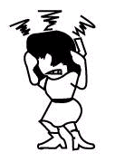Dizziness is complex enough that it deserves special study here. As said previously, the dizzy bar is reduced whenever a character is hit by a bullet, and when it is empty that character becomes dizzy, which is a state of mental confusion during which they can do nothing but stand there and take hits. How much the attacks of the different characters reduce the dizzy bar varies. Panzerfaust's attacks reduce it the most, Speedstar's attacks reduce it the least (the difference is very striking if you pay attention), and the others are in-between. How quickly the dizzy bar recovers also depends on the character: generally, those who do a lot of dizzy damage recover from dizzies faster too. However, for all of the characters, the reduction of the dizzy bar is somewhat intricate, it depends on many variables. The dizzy bar reduces more if a bullet has bounced off a wall before hitting a character (this applies to anyone's bullets). The dizzy bar reduces more the greater the distance the character firing the bullet is from the character being hit. The direction also matters: hitting someone from the back dizzies them more than hitting them from the side, which dizzies more than being hit from the front; for this purpose it's the aiming direction that matters, not the direction the character is moving in. Dizziness also results in three other special circumstances which can immediately dizzy: 1) when a character is standing too close to a flashbang grenade when it goes off, that character becomes dizzy, 2) when Speedstar is hit in camo mode she becomes dizzy, and 3) when a character is hit by Speedstar in camo mode (with the bullet that takes her out of camo mode, since firing cancels it) bey become dizzy, because they have no idea that they were going to be hit from that direction Important: as in many other fighting games, if you press the movement buttens and the fire button rapidly while dizzy, you will come out of dizziness faster. |
||||||||||||
|
SPECIAL TERRAIN & OBJECTS
POWER-UP BOXES 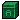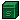The game will continuously spawn objects across the map as you are playing (unless you have this option turned off in the options menu, or unless it is difficulty level 8). The A(mmo) boxes will give you more ammo while the S(pecial) boxes will increase your special item supply. The ammo power-up box appears more often when a character has no more ammo clips left: if power-up boxes are turned on, there should always be at least one ammo box on the screen when one of the characters has no bullet clips left. BARRELS 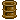Barrels won't give you anything, but it can be used strategically: shooting a barrel while the enemy is standing close to it will cause it to explode and sometimes damage anyone nearby. MEDICAL KITS Medical kits recover your health by one-third of a health bar, but will not recover higher than the lifebar you are currently on. CRATES 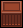Big crates block your bullets, but after they take a number of hits, they'll be destroyed. They can also be destroyed instantly by Alphasix's katana. You can shoot over small crates, but you cannot walk over them. They can be pushed, which is useful to slow the enemy's pursuit. They can be destroyed with any character's melee weapon. In both big and small crates, sometimes you might find helpful power-up boxes. Both types of crates can be destroyed by explosions (whether by a barrel or by a grenade). CARS Cars can be destroyed if shot enough times, and the resulting explosion is quite dangerous to anyone nearby. The trouble with cars is that you never really know when they'll explode. SWAMP In Cambodia, if you stay too long on the swamp without moving, your health bar will slowly be depleted. It also decreases the movement speed of anyone inside it by half, even (temporarily) after they leave the swamp -- during which time dark footprints will be visible. However, Alphasix is not effected by swamp at all, she isn't damaged, nor is she slowed by it. AREAS OF CONFLICT The game spans across the globe, and knowledge of each map aids battle effectiveness greatly. Many more maps are available in 2-player mode than in the single-player mode; there are a total of 30 different areas, mainly located in the United States, China, Japan, and Europe. OTHER DANGERS There are also rumors of a level with spikes... |
||||||||||||
|
TIPS & STRATEGY
GENERAL TIPS Good strategy largely depends on which character and which mode (A, B, or C) you pick, but there are some general tips which can be used in a broad range of situations. Learn which types of objects block gunfire, and hide behind those objects when being fired at. You should always keep under cover unless you are firing at the enemy or unless the enemy doesn't have any bullets left, because when your opponent has a free shot, he will take it, and at higher difficulty levels especially, his aim will probably be more accurate than yours. When you are first learning the game, the easiest way to kill your enemy will be with danmaku attacks. You should learn which attacks do what, and use them when you are appropriately placed. A good technique is to lock your opponent into a corner or small area which he won't be able to get out of, and then use the danmaku attack. It's important to learn how to avoid danmaku as well -- memorizing all of the game's 45 danmaku isn't impossible, and once you have most of them memorized you will better be able to survive when your opponent uses them. It's fully possible to avoid getting hit by any danmaku, even in small stages, by cautious movement and tactical use of special cancel. After you begin to master the game and proceed to higher difficulty levels (or playing against a human opponent), dizziness becomes more and more important, as it's often a prelude to death. Understanding how dizziness is calculated will help you dizzy your opponent and become dizzied less. STRATEGIES There are some combinations of characters with modes which work particularly well. My personal favorites are Panzerjager in A Mode (for the 12 grenades), Alphasix in B Mode (for the long dodge distance), and Speedstar in C Mode (extremely fast movement), but other combinations may work even better; experiment. One useful but undramatic strategy is, if you have a timer, to employ it well. Damage your opponent so that their life is lower than yours, and then hide until the timer runs out. This is surprisingly effective, as the AI is often at a loss to find a hiding player (though this probably just shows that I'm bad at AI programming). Another strategy is: don't neglect bouncing bullet attacks, especially with Sixshooter. She can see around corners (in effect) with her special ops unit, and her bullets become more powerful and faster when they bounce off of walls, so in levels with many bouncing objects she doesn't really need to directly confront her opponent at all. |
||||||||||||
|
DIFFICULTY LEVELS
There are 8 difficulty levels, level 1 being the easiest, level 8 being the most difficult. If you're playing the game for the first time, we suggest a level between 1 and 3. You can unlock Alphasix if you finish the game on difficulty level 4, and you get a special "treat" if you finish the game on difficulty level 8. The way the difficulty modes work is pretty simple: it affects how fast the enemy's target cursor moves toward you, and it affects how often the AI takes in new information, considers things, and reconsiders its current plan. Besides that, difficulty levels 1 to 7 are identical (although the stages in which you fight your opponent are different in levels 1 to 3 than in levels 4 to 7). Difficulty level 8 is by far the hardest of them. In level 8, you can't use danmaku attacks, but your opponents can. You will also have to face them in very difficult stages. And, they will start the battle with extra ammo. Until you complete it at least once, you may only choose Panzerfaust at difficulty level 8. Randomly spawning boxes will not appear, nor will the timer. There are other differences as well. You will be timed in difficulty level 8, and if you manage to complete the game in difficulty level 8 (an extremely difficult feat), your total time will be displayed. Take a screenshot of this if you want to preserve your accomplishment, and compare it to the best reported times here. |
||||||||||||
|
2-PLAYER MODE
Currently there is no online or LAN multiplayer capability within this game, although this is planned for the future. However, you can still play the game against a friend on a single computer if you have a dual-analog style joystick. One character uses the joystick, the other character uses the keyboard. If you have two joysticks, you can also do it that way. The game in this mode differs from the one-player game in that neither player is ever invisible to the other (which would be impossible on a single screen). Besides that, it is identical to the single-player game. In addition, many more maps are available in the 2-player mode than in the single-player mode; these maps are designed around human vs. human play, not around human vs. AI play, and so tend to have more parity (evenness or symmetry). I know it's somewhat disappointing that you can't play this game against friends online or over a network, but we're new to whole the multiplayer coding idea. We certainly do want to add it in one day, perhaps we'll have it working by the end of the year (2006). If you are familiar with Game Maker multiplayer coding and would like to assist us, contact us. |
||||||||||||
|
TUTORIAL MODE
A short introductory tutorial is available from the title screen, it's recommended you try that first, as it will familiarize you with the game controls and prepare you for real battles. There are only three levels to it, and you will be timed. It's actually more like a set of mini-games than a tutorial, but it still introduces some of the gameplay basics in a fun manner. In the first mission, you'll have to shoot barrels -- from a distance. Shoot them accidentally when you are too close to them, and it's over. This tutorial will train you to aim and fire your weapon, and to reload. In the second mission, you'll have to defeat someone using only melee attacks and dodging. This will train you to move precisely and to take an opponent into account. In the third mission, you'll have to collect yellow fireflies while avoiding purple ones. This will train you to react quickly to moving objects. As with difficulty level 8, you will be timed in tutorial mode. Report your best times here! |
||||||||||||
| PRE-POSTMORTEM This
game isn't "complete" and so this isn't a true postmortem -- it's a
pre-postmortem. But the purpose is the same: to give the reader insight
into the game's development, and to summarize what I learned from that
experience. I have no illusions that this will be interesting to
everyone: the vast majority of you should skip this, it is really only
of interest to other amateur game developers, and probalby not even to
most of those.
Because it's so long, it makes up a seperate page. |
||||||||||||
| CREDITS DESIGN
Lead Design: Hardi "Orchard-L" Gosal Assistant Design: Paul "RinkuHero" Eres GRAPHICS Lead Graphics: Hardi "Orchard-L" Gosal Particle and Effect Graphics: Paul "RinkuHero" Eres Character Sprite Graphics: Kevin "Charbile" Loan PROGRAMMING Programming: Paul "RinkuHero" Eres VOICE ACTING Alphasix: Ariel "Miyu Sakura" Anderson Panzerjager & Announcer: Alexander "Hachi-Roku" Santos Panzerfaust: Kenneth "Harlock Hero" Whitehead Sixshooter: Linda "Bireaux St. Juste de Jarjeyes" Folsom Speedstar: Jess "Jevkis Gryphon" Glover ENGINE & LIBRARIES Game Maker Engine: Mark Overmars JPFMod Library: M. Rijks Fmod Library: Firelight Multimedia MUSIC IMPORTANT NOTE: Music used without permission. If you are an author and have a problem with us using your music in this game without permission and would like your song removed from the game, email us and we'll remove it. The music in this game is temporary and will be replaced after we find an associate musician. If interested in creating this game's soundtrack, email us with your best samples. Bit/Cinefex Elwood Gammus Jeconte Jochen Hippel Lesnik Purple Motion Radix Reed & Tempest Smash of Fairlight Theralite Zabutom & Dubmood Zalza (Rebels) PLAYTESTING Abi Dierecte Atheism Bastardzero Byakko Charbile Dr. Shizuma Fyrewulff Hachi-Roku Haggard Harlock Hero Ian Fabulian Inferior Minion Jevkis Gryphon J'sang'spar Little Richie Longebane Nanamihero Retrogamer Specplosive Taernost T-Master Wynand |
||||||||||||
| SUPPORT Alphasix is
freeware, but there are a number of ways that you can support it and our other games.
First, send us feedback (comments, suggestions, bug reports, etc.). You can most easily do this on the Alphasix board in our forums. Second, tell your friends about Alphasix if you like it and want them to try it out. Third, try out our other games, and tell us what you think about them as well. Fourth, if you'd like to support the game monetarily, you can donate $3 to us via PayPal, which will go toward our server costs and which will encourage us to continue to create games like this. (There's also this, which I made as a joke, but the mousepad actually looked pretty good. Not that anyone uses mousepads these days, with the advent of optical mice.) |
||||||||||||
|
NOTES
You may use this space to record whatever notes you wish. |
||||||||||||
| 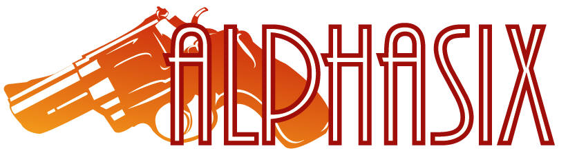 |